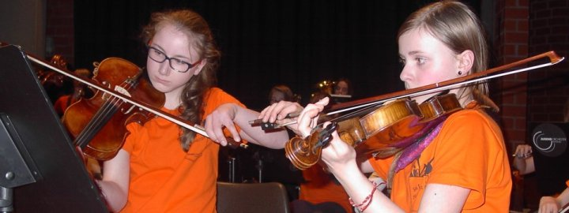

Sek-I-Orchester
2018

Volle Aula in zwei Konzerten. Foto: Hanno Meyer
Nikolauskonzert
Drei Haselnüsse für Aschenbrödel
Am 6.12.2018 folgten 700 Schüler aus Detmolder Grundschulen der Einladung ins Grabbe-Gymnasium und erlebten märchenhafte Konzerte der 70 Musikerinnen und Musiker des SI-Orchesters unter Leitung von Florian Wessel.
Zu Beginn intonierte das Orchester Teile der Filmmusik aus „Drei Haselnüsse für Aschenbrödel“ und zum Rahmen der Handlung konnten die Grundschüler mitsingen und mitmachen. In eigens für den Anlass geschriebenen Sätzen für Blechbläser sangen alle Konzertbesucher und Mitwirkende schwungvoll Advents- und Weihnachtslieder. „O du fröhliche, o du selige“ erklang stimmungsvoll und stimmgewaltig in der Neuen Aula des Grabbe-Gymnasiums. Auch beim „Stern über Bethlehem“ und „Morgen kommt der Weihnachtsmann“ waren die Schülerinnen und Schüler textsicher und freudig dabei.

Zur Orchesterversion des „Ungarischen Tanzes Nr. 5“ von Johannes Brahms tanzten die Grundschüler mit ihren Armen und Beinen im Takt der Musik. Bei Dvoraks „Humoreske“ überraschten die Schlagwerker des Orchesters mit einem plötzlichen Forte-Einsatz, welcher in der Geschichte mit dem Verlieren von Aschenbrödels Schuh auf ihrer rasanten Flucht aus dem Schloss verbunden wurde. So in Schwung durften sogar einige Grundschüler das Orchester dirigieren, was vom aufmerksamen Publikum mit großem Applaus honoriert wurde. Abschließend spielte das Orchester in klanglicher Ausgewogenheit und eindrucksvoll voluminös die Filmmusik aus dem Film „Drei Haselnüsse für Aschenbrödel“.
„Ein tolles und sehr eindrucksvolles Konzert“, sagten die Zuhörer. „So ein Orchester macht richtig Spaß“ und „da will ich auch später mitspielen“ berichteten die begeisterten Kinder.
Das sinfonisch-vollbesetzte SI-Orchester mit Schülern aus den 5. bis 9. Klassen des Grabbe-Gymnasiums und mit Unterstützung durch junge Musiker aus dem Bildungshaus Weerthschule überraschte mit großer Spielfreunde, Lust an musikalischer Differenzierung und großer Leidenschaft unter der gekonnten Leitung von Moderator und Dirigent Florian Wessel.
Die Konzerte bleiben noch lange in Erinnerung und waren ein stimmungsvoller Auftakt in die Advents- und Weihnachtszeit.
2017
Klosterbrunnen

auf das Foto klicken, um es zu vergrößern!
Dschungel und Savanne im Schnee
zum 30. Mal Orchesterfahrt nach Klosterbrunnen
von Theresa Tadday ( 8m)
Am Montag, 28. Februar, fuhr das SI-Orchester des Grabbe-Gymnasiums zum 30. Mal auf Orchesterfahrt nach Klosterbrunnen. 51 Kinder fieberten dem Ziel entgegen, wenn auch manche sich nur schwer von ihren Familien trennen konnten. Angekommen, wurde zunächst die Zimmerverteilung vorgelesen und von den meisten mit einem leisen Jubelruf entgegengenommen. Ich war nun schon in der 8. Klasse, das heißt leider das letzte Mal dabei. Das letzte Jahr ist aber immer etwas ganz Besonderes. Die 8-Klässler dürfen nämlich immer in „die Wohnung“. Das ist ein abgeteilter Bereich mit je drei Dreierzimmern, einem eigenen Bad und einem Sofa! Außerdem gebührt den 8-Klässlern die Ehre, den bunten Abend zu gestalten. Darauf komme ich aber später nochmal zurück.
Die Betten bezogen und den Koffer ausgepackt, ging es auch schon gleich los mit der ersten Probe. Auf dem Programm standen Stücke aus dem Dschungelbuch, König der Löwen und Dvoraks „Furiant“. Danach gab es zur Kaffeestunde Kuchen. Nach weiteren Probenstunden zauberten die Küchenfrauen ein leckeres Abendessen.
Am nächsten Tag ging es relativ früh weiter. Wir frühstückten und probten und probten und probten …. Zwischendurch gab es natürlich immer wieder Pausen und Freizeit. Irgendwann fing es dann an zu schneien. Am Mittwoch lag dann soviel Schnee, dass wir sogar Schlitten fahren konnten. Am Abend, als alles dunkel war, haben wir dann die alljährliche Nachtwanderung gemacht. Es ist eine Art Ritual, dass die 8-Klässler sich zwischen den Bäumen verstecken und versuchen, die Jüngeren zu erschrecken.
Am Donnerstag fingen dann am späten Nachmittag endlich die Vorbereitungen für den bunten Abend an. Da die Orchesterfahrt ja immer in der Woche nach Rosenmontag (also über die Karnevalstage) stattfindet, ist der bunte Abend ein Kostümfest. Dieses Jahr verkleideten sich alle zu dem Thema „Ein musikalischer Dschungel“. Da wir Ältesten das Highlight der Woche vorbereiten und gestalten dürfen, saßen wir in den Pausen zusammen und bastelten Kronen für die Gewinner der Gruppenspiele sowie für den Kostüm- und Tanzwettbewerb. Ebenfalls kümmerten wir uns um Musik, Licht und Unterhaltung.
Um den bunten Abend dem Thema anzupassen, haben wir dieses Jahr einen „Dschungelkrimi“ vorbereitet. Dabei ging es darum, der Entführung von Mogli auf die Spur zu kommen und bei lustigen Gruppenspielen Hinweise bezüglich des Täters zu bekommen. Viel Spaß gab es beim Gummibärchen schmecken, Schleichtiere erfühlen, Tigerweitsprung, Liederheulen oder beim Geier-Eierlaufen. Am Ende gab es natürlich auch eine Gewinnergruppe, die sich über kleine Preise freute.
Am Freitag, dem letzten Tag, wurden nach der Probe die Koffer gepackt. Ein letztes Foto und „Auf Wiedersehen Klosterbrunnen bis zum nächsten Mal“ – für die meisten zumindest.
Abschließend möchte ich als Konzertmeisterin ein herzliches Dankeschön an Frau Hilbert-Opitz und Herrn Wessel richten, und eines kann ich hinsichtlich des kommenden Konzertes versprechen: Es wird tierisch gut!!!
2016
Haensel_&_Gretel

Schuld an allem war der Milchtopf
Das SI-Orchester führt Humperdincks „HÄNSEL und GRETEL“ auf
Die 55 Mitglieder des Unter- und Mittelstufenorchesters haben ein halbes Jahr geprobt und bringen nun Humperdincks berühmte Märchenoper instrumental zu Gehör. Leidenschaftlich, märchenhaft und manchmal auch opulent erklingen die zauberhaften Melodien der Orchesterfassung dieser populären Oper. Zu Beginn erklingt fast eine ländliche Idylle mit zwei tanzenden und spielenden Kindern, Hänsel und Gretel, doch im Verlauf der Handlung wird es dann doch gruselig. Wir treffen auf die fürchterlich-schaurige Knusperhexe, die uns versucht zu verführen. Im Bann des Hexenrittes und des Knusperwalzers tanzen wir der Rettung entgegen.
Die Orchesterfassung wird ergänzt durch Bilder der KunstAG des Grabbe Gymnasium. Florian Wessel leitet und moderiert das Konzert und die MITMACHAKTIONEN. Eintritt frei am Sonntag, 4. Dezember, ab 16 Uhr in der Neuen Aula.
Kloster Brunnen

Februar-Konzert

Reizvolles Wechselspiel
Szenische Lesung beim Konzert, passend zu den Musiktiteln
Von Walter Hunger (Text, Fotos, Video-Kamera)
Die Zuhörerinnen und Zuhörer konnten am letzten Donnerstag im Februar in der vollbesetzten Neuen Aula des Grabbe-Gymnasiums/unserer Schule die Musiker des „kleinen“ Orchesters in Bestform erleben. Was die Mädchen und Jungen in den letzten Monaten einstudiert hatten, woran sie während der intensiven Probetage im abgeschiedenen Kloster Brunnen Anfang des Monats gefeilt hatten, erfreute das Publikum uneingeschränkt. Das musikalische Gerüst bildete Mozarts Oper „Figaros Hochzeit“, das Geschehen der Oper wurde in Form einer szenischen Lesung von ausgewählten Mitgliedern des Orchesters vorn an der Bühne ausdrucksstark und mit viel Witz vorgestellt. So ergab sich ein reizvolles Wechselspiel von szenischer Darbietung und den entsprechenden Musiktiteln. Beides erhielt immer wieder Beifall, und die jungen Künstler zeigten sich dem Anspruch der Musik und der nicht immer einfachen Handlung gewachsen. Können, Spielfreude und Temperament seiner Musiker wusste der Dirigent Herr Wessel gekonnt aufzugreifen und abwechslungsreich zu gestalten.
Nicht fehlen durfte bei dieser Aufführung der Dank an die Instrumentallehrkräfte, der Dank an die Eltern und der Dank an die Kollegin Frau Hilbert-Opitz, die die große Gruppe während der Tage in Kloster Brunnen unermüdlich unterstützte.
Mit unermüdlichem Beifall erzwang sich das Publikum drei Zugaben.
Ein wunderschöner Abend! Dank an alle Beteiligten für ihr Engagement!
Videoclip
2015
Kloster_Brunnen

Das SI Orchester ist zurück
Von Jara Lahme und Lisa Hobbensiefken
Fünf Tage hat das 50köpfige SIOrchester des Christian-Dietrich-Grabbe-Gymnasiums unter der Leitung des Dirigenten Florian Wessel fleißig geübt und mehrere Stücke auf die Beine gestellt. Mal ganz ohne Internet und Empfang genoss das Orchester die Ruhe und das gute Essen in Kloster Brunnen im Sauerlauland. Die „Achter“ verabschiedeten sich am letzten Abend traditionell mit lustigen Challenges, lauter Musik und viel Tanz bis tief in die Nacht, da für sie nun die Möglichkeit besteht in das Detmolder Jugendorchester einzutreten.
Die Ergebnisse der Probenwoche sind am Mittwoch, 4.März, im Konzert um 18:00 Uhr in der Neuen Aula des Grabbe-Gymnasium zu hören.
Natürlich bietet das SIOrchesters auch wieder Grundschulklassen in sogenannten Musikvermittlungskonzerten an, Musik, Instrumente und Musiker kennenzulernen. Interessierte rufen zwecks Terminvereinbarung folgende Internetseite auf: musikvermittlung@gmx.de

2014
Die Zauberflöte
- zur Bildergalerie vom Konzert und von den Proben in Kloster Brunnen =>
- LZ-Rezension von Andreas Schwabe =>

Die Flöte ein Schwert
Fulminante Aufführung des Sek-I-Orchesters in gut gefüllter Neuer Aula
Von Hajo Gärtner (Text & Fotos)
Die Beifallsstürme seien »prächtig« gewesen, »eine Zugabe unvermeidlich«: So enthusiastisch im Urteil beginnt Andreas Schwabe seine Rezension vom Konzert in der Neuen Aula. Dann scheint er diese hochfliegende Wertung relativieren zu wollen: Wenn die eigenen Kinder auf der Bühne musizieren, sei der Erfolg garantiert. Applaus also vorprogrammiert; komme, was da wolle.
So herb kann es der LZ-Kritiker aber nicht gemeint haben, denn die lobenden Anmerkungen reißen in der Folge nicht mehr ab und münden in der Anerkennung: »Das Orchester hat alles Lob verdient, hat es sich doch gut durch die schwere Partitur gehangelt und einzelne Stellen etwa in der Flöte schon so musikalisch dargestellt, dass etwas von der Tiefe mozartscher Musik spürbar wurde.«
Im Klartext: An der musikalischen Leistung des Sek-I-Orchesters gibt es nichts auszusetzen, im Gegenteil. Denn die »Zauberflöte« sei, wenn man sich die Noten genau anschaue, »ganz schön schwer«. Eine schwere Aufgabe also, luftig-locker-leicht gelöst. So wie von einer Turnerin, deren Meisterschaft sich darin zeigt, dass sie bei den schwierigsten Übungen geradezu federleicht über dem Boden schwebt.
Etwas Anderes hat dem Kritiker hingegen gar nicht gefallen, und das betrifft die optische Illustration mit Manga-Bildern, mächtig auf die große Leinwand gebeamt. Was er von der Idee an sich hält, darüber schweigt sich der Rezensent aus. Aber beim Tamino kocht ihm die Galle hoch, weil der wie ein Yedi-Ritter ausschaut und sein Schwert schwingt, statt die Zauberflöte zu blasen. Der Priester Sarastro mutiere zum Biest, das der schönen Pamina seine Klauen entgegenstrecke.
Dann wird Schwabe gar oberlehrerhaft: »Bei allem Respekt vor künstlerischer Freiheit hätten die Verantwortlichen solchen groben Missverständnissen frühzeitig entgegen wirken sollen«. Respekt, Herr Schwabe, das ist eine mutige Kampfansage. Sie beruht allerdings auf einem Missverständnis: Die Manga-Illustrationen setzen die Figuren der Oper gar nicht in Szene; schließlich tritt niemand auf die Bühne, um eine klassische Arie zu schmettern. Vielmehr handelt es sich um instrumentale Reduktion, wenn man so will: eine Abstraktion der bekannten Oper. Da wäre eine Optik geradezu verfehlt, die auf eine fotorealistische Veranschaulichung aus ist. Die Manga-Zeichnungen sind ordentlich weit weg von einem solchen Fehlgriff und liefern einen künstlerischen Mehrwert. Unter rein ästhetischen Gesichtspunkten betrachtet, sind die Zeichnungen von Emma Göke und Jenny Unrau eine Wucht in Tüten. Das hat auch der LZ-Rezensent gespürt: Er bescheinigt ihnen »viel Talent« und »guten Schwung«.
Ich lese die Kritik als Würdigung der musikalischen Leistung und denke mir ein Lob für die innovative ästhetische Gestaltung hinzu. Fügt man beides zusammen, kommt man nah an die Wahrheit der Aufführung heran. Ganz nebenbei: Die Neue Aula war gut gefüllt mit einem Publikum, das mit ehrlichem Beifall nicht geizte und sich am Ende zu einem minutenlangen Schlussapplaus hinreißen ließ. Und ich habe niemanden gesehen oder gehört, der jene Zauberflöte optisch vermisst hätte, die »alle Seelen friedvoll werden lässt« (Schwabe). Dann lieber das Schwert einer wuchtigen Inszenierung, die uns von den Stühlen haut.
 Magie des Zaubertons
Magie des Zaubertons
Entdeckung von Mozarts Zauberflöte
Von Florian Wessel
Am Rosenmontag war es wieder soweit und 54 Schülerinnen und Schüler der 5. bis 8. Jahrgangsstufe stiegen in den Bus nach Kloster Brunnen im Sauerland, um im Rahmen der traditionellen Orchesterfahrt des SI-Orchesters intensiv zu proben. Fern ab von Handyempfang und Internet wurden die Hits der Zauberflöte erarbeitet und aus vielen Instrumentalisten ein Orchester geformt. Zurück in Detmold wollen die Schülerinnen und Schüler des SI- Orchesters ihre Begeisterung und ihr Können zeigen und laden dazu alle dritten und vierten Klassen der Grundschulen der Umgebung ein, sich mit mir als dem neuen Dirigenten des Orchesters auf eine zauberhafte musikalische Reise in die Märchenwelt der Oper – diesmal allerdings ohne Sänger - zu begeben. Das Konzert wird moderiert und natürlich fehlt es nicht an bekannten Charakteren, wie dem unbeschwerten Naturburschen Papageno und dem liebenden, sich in Prüfungen bewährenden Helden Prinz Tamino. Illustriert werden die Hauptfiguren im Manga-Stil von der Comic-AG. Musikalisch werden in den Gestalten von Sarastro und der Königin der Nacht „gut“ und „böse“ lebendig und von einzelnen Instrumentengruppen nachvollziehbar dargestellt.
Interessierte Lehrerinnen und Lehrer können sich zwecks Terminabsprache für exklusive Vormittagskonzerte an mich wenden: musikvermittlung@gmx.de.
Das öffentliche Konzert mit der „Zauberflöte“ beginnt am Donnerstag, 27. März, um 18 Uhr in der Neuen Aula des Grabbe-Gymnasiums. Der Eintritt ist frei.
2013
2012
- Bildergalerie mit Fotos von GO-Kulturreporter Walter Hunger =>
- Videoclip mit Filmmaterial von Walter Hunger =>

Eine feste Tradition
Videoclip
2011
Der Clip ist auf dem Youtube-Server im Modus ,,nicht gelistet" abgelegt, kann also mit der allgemeinen Suchmaschine nicht gefunden werden. Das Video ist nur auf der Grabbe-Homepage zu sehen und von Freunden, die den exakten Link kennen. [hjg]

{kind=link}
{kind=link}